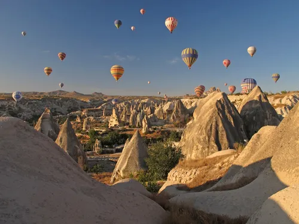

Turkey
A bridge between East and West with a rich historical soul
About Turkey
Turkey is a country straddling Europe and Asia, rich in history and culture. It was home to great civilizations, including the Byzantine and Ottoman Empires. Turkey offers a mix of historic architecture, natural beauty, and vibrant markets. Cities like Istanbul and Cappadocia are famous for their mosques, palaces, and unique landscapes. The country also serves as a bridge between continents, blending Eastern and Western traditions.
Capital
Ankara
Population
85 million+
Official Language
Turkish
Currency
Turkish Lira (TRY)
Continent
Europe/Asia
Famous Tourist attractions

Hagia Sophia

Cappadocia

Blue Mosque